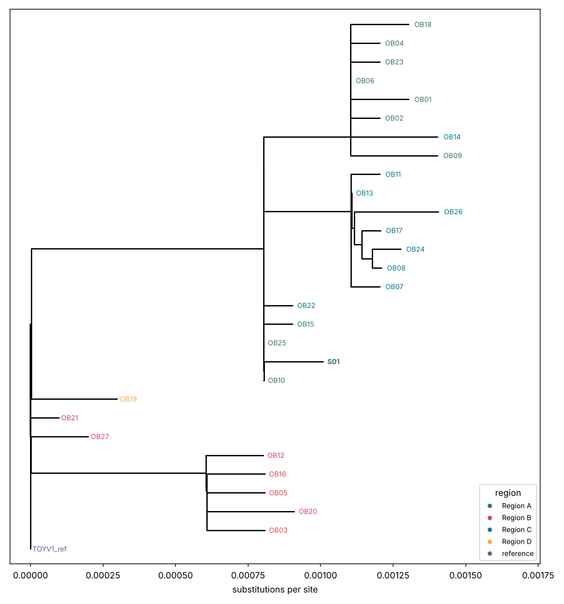
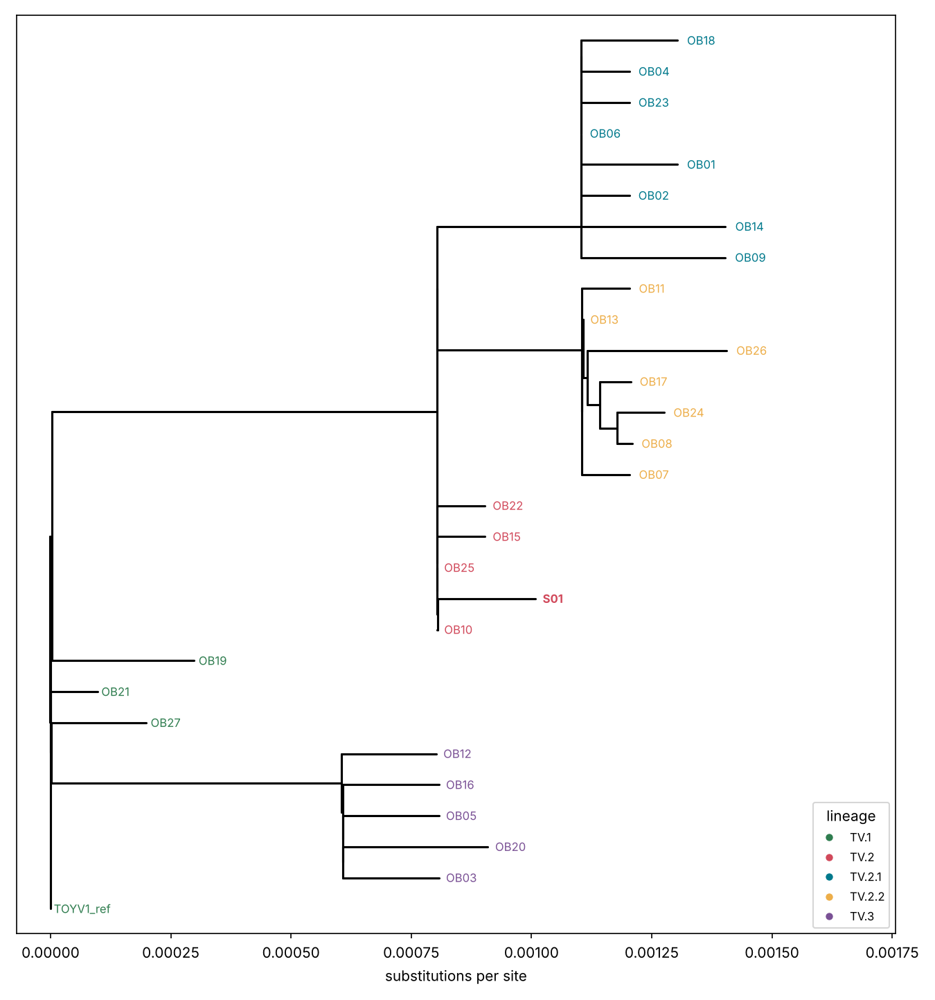

Read a phylogenetic tree
Module 3 — 45 min
Anatomy of a tree
- Tips = the genomes you sequenced. Internal nodes = inferred common ancestors.
- Branch length = amount of change (substitutions per site), not time (unless the tree is time-scaled).
- Clade = an ancestor and all its descendants. Rotating the branches around a node does not change the tree.
- Root = where the tree starts. Without a root you cannot say who is ancestral.
- Support (bootstrap) = how robust a branch is. With ultrafast bootstrap, a value ≥ 95 is considered strong; be careful with lower values.
What a tree can and cannot tell
| It can show | It cannot prove |
|---|---|
| which genomes are closely related | who infected whom |
| whether cases form one cluster or several introductions | the direction of transmission |
| whether a lineage spreads across regions | that two similar genomes are epidemiologically linked |
Exercise — read the tree
The figure below was made from the course data with the plan-B method (neighbour-joining). Open yours too: it should look similar.


Dates and regions are in data/outbreak/metadata.tsv. To sort the genomes by date:
sort -t$'\t' -k2,2 data/outbreak/metadata.tsv | column -t -s $'\t'Questions
- Where is S01? Who are its closest relatives?
- How many clusters do you see, and in which regions?
- Which part of the tree is the oldest? (use the dates)
- Do the Region C cases form one cluster or several? What does it suggest?
TipAnswers
- S01 is in the TV.2 group, next to OB10, OB25, OB15 and OB22 (2–3 SNPs away). OB10, OB25 and OB15 are Region A genomes from 2–4 March: S01 (2 March, Region A) fits perfectly with the start of the Region A outbreak. OB22 is a Region C genome (12 March).
- Four groups hang from the root: (i) background TV.1 genomes (Regions B and D, January–February), (ii) TV.3 (Region B, February–March), (iii) the TV.2 early group (Region A, with one Region C genome), and, derived from it, (iv) two sub-clades: TV.2.1 (almost all Region A) and TV.2.2 (Region C).
- The oldest genomes are the TV.1 ones (January–February) and the TV.3 ones (February–March), close to the root. The TV.2 group starts in early March; TV.2.1 and TV.2.2 appear from late March: the tree order matches the dates.
- One main cluster (TV.2.2: 7 genomes, from 25 March) plus two other Region C genomes that belong to other groups (OB22, an early TV.2, and OB14, a TV.2.1). This suggests several links between regions A and C: an introduction of the early TV.2 virus followed by local transmission (the TV.2.2 cluster), and a later exchange (OB14). Direction cannot be proved by the tree alone.
Final question
Two genomes are identical. List three explanations other than “A infected B”.
TipAnswer
- Too few mutations to tell them apart: viruses change slowly, so unrelated cases can have the same sequence over a short period.
- A common source (same event, same contaminated food/animal) that infected both without contact between them.
- A common ancestor several steps earlier, with unsampled intermediate cases (you only see part of the chain).
- Laboratory contamination or barcode bleed between the two samples.
- Missing data: identical on the positions that could be compared (N regions hide differences).
Next: Communicating genomic evidence — module 4.